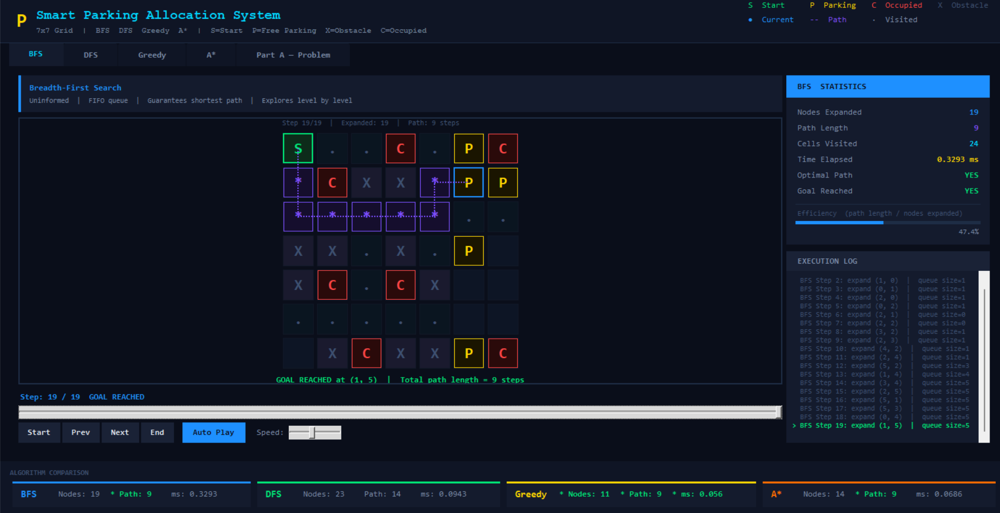
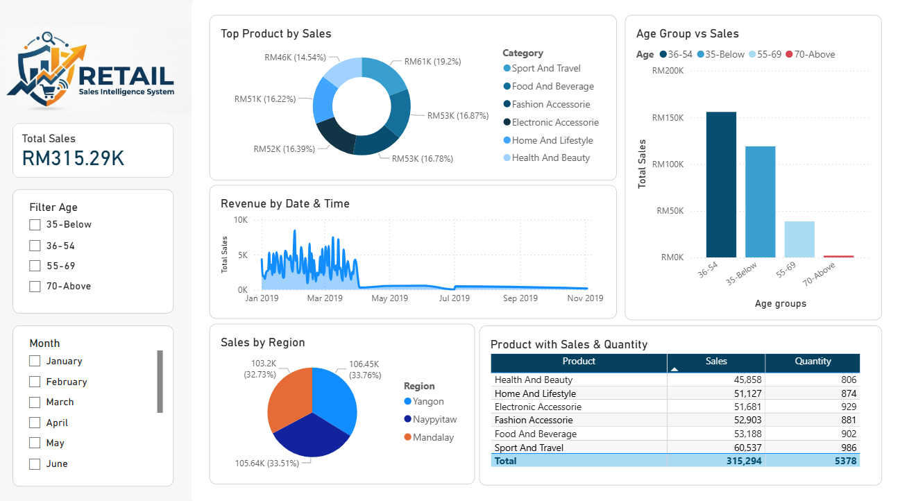

CS concepts, project breakdowns, and software dev tips.
Final Project Degree
To study the interaction between geomagnetic field variations and solar activity through comprehensive data analysis. The system scope is limited to solar activity and geomagnetic field data anlysis for precersor and detecting ; sesimic data interg

ARTIFICIAL INTELLIGENCE PROJECT
In this system, a car must find the nearest available parking spot while avoiding obstacles and congested areas. We implemented BFS with DFS, Greedy Best-First Search, and A*, which can find the shortest path in an unweighted environment.

DATA MINING PROJECT
is project brings out a Retail Sales Intelligence System by transforming raw transactional data into a multidimensional BI model using ETL and star schema design to combat slow decision making because of the complex operational data. It automates the reporting process by switching to interactive Power BI dashboards.